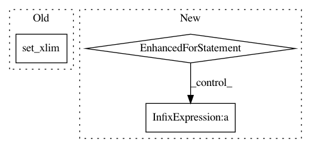

4f1e7f2f936bf5f3e6d1da8d8be843dc3273fe67,examples/1d/plot_filters.py,,,#,17
Before Change
axs[k].plot(np.arange(T)/T, phi_f[0], "b")
for psi_f in psis_f[k]:
axs[k].plot(np.arange(T)/T, psi_f[0], "b")
axs[k].set_xlim(0, 0.5)
axs[k].set_ylim(0, 1.2)
axs[k].set_xlabel("\omega")
axs[k].set_ylabel("\hat\psi_j(\omega)")
axs[k].set_title("Q = {}".format(Qs[k]))
After Change
plt.figure()
plt.plot(np.arange(T)/T, phi_f[0], "r")
for psi_f in psi2_f:
plt.plot(np.arange(T)/T, psi_f[0], "b")
plt.xlim(0, 0.5)
plt.ylim(0, 1.2)
plt.xlabel(r"$\omega$", fontsize=18)
plt.ylabel(r"$\hat\psi_j(\omega)$", fontsize=18)
In pattern: SUPERPATTERN
Frequency: 3
Non-data size: 3
Instances
Project Name: kymatio/kymatio
Commit Name: 4f1e7f2f936bf5f3e6d1da8d8be843dc3273fe67
Time: 2018-11-21
Author: janden@flatironinstitute.org
File Name: examples/1d/plot_filters.py
Class Name:
Method Name:
Project Name: scikit-image/scikit-image
Commit Name: 9346b030fbb9e1630e92153337911a85be10cc1f
Time: 2021-02-12
Author: stefanv@berkeley.edu
File Name: doc/examples/edges/plot_line_hough_transform.py
Class Name:
Method Name:
Project Name: SheffieldML/GPy
Commit Name: 5cc17e87542da0ec1b41d3c159caeb22ac493cd2
Time: 2015-06-28
Author: z.dai@sheffield.ac.uk
File Name: GPy/plotting/matplot_dep/visualize.py
Class Name: mocap_data_show
Method Name: finalize_axes